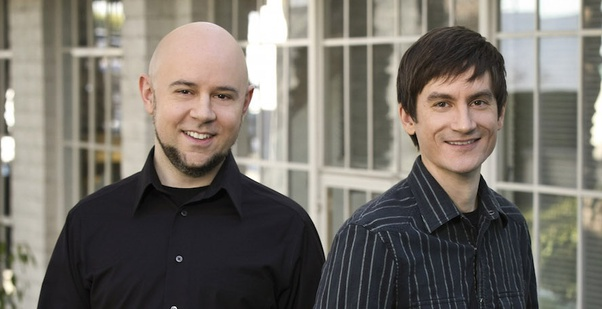

My favourite character is Aang
The Avatar
Hi
Aang was a male Air Nomad born in 12 BG and the Avatar during the Hundred Year War, succeeding Avatar Roku and preceding Avatar Korra. As the Avatar of his time, he was the only person capable of using all four bending arts: airbending, waterbending, earthbending, and firebending. He was also one of a select few Avatars and one of the first in many cycles to learn the ancient art of energybending and the first Avatar known to have actively used the technique.
About
About Aang
Character Reviews
Contact me :
Phone number:0530972053
Name:Rishi Arun
My inspiration
Avatar: The Last Airbender, known as Avatar: The Legend of Aang in some regions, is an American animated television series produced by Nickelodeon Animation Studios. It was co-created by Michael Dante DiMartino and Bryan Konietzko, with Aaron Ehasz as head writer. It aired on Nickelodeon for three seasons, from February 2005 to July 2008.[2] Avatar is set in an Asiatic-like world in which some people can manipulate one of the four elements—water, earth, fire, or air—with telekinetic variants of the Chinese martial arts known as "bending". The only individual who can bend all four elements, the "Avatar", is responsible for maintaining harmony between the world's four nations, and serves as the bridge between the spirit world and the physical world. The show is presented in a style that combines anime with American cartoons, and relies on the imagery of mainly East Asian culture, with some South Asian, New World, and Inuit and Sireniki influences.